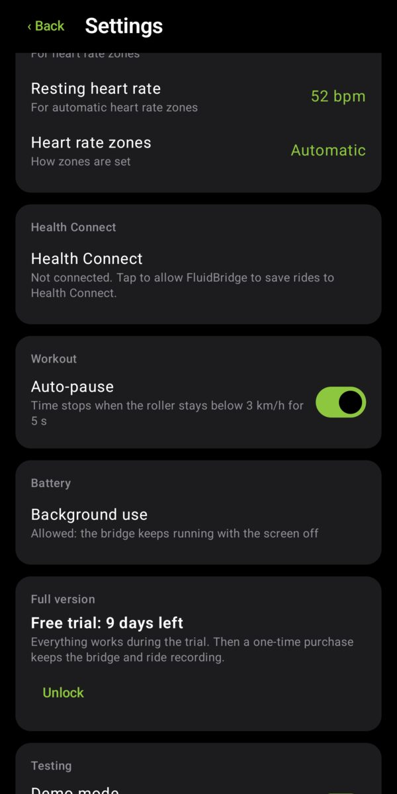
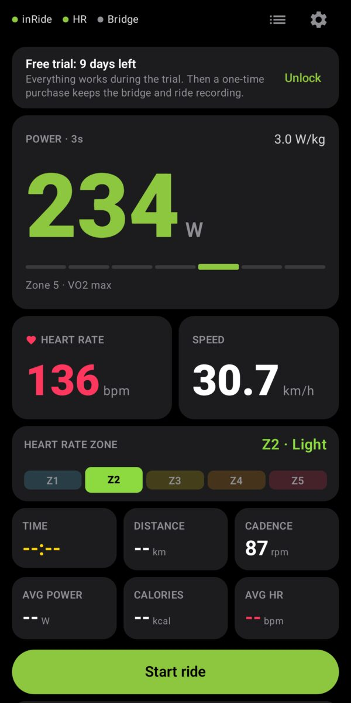
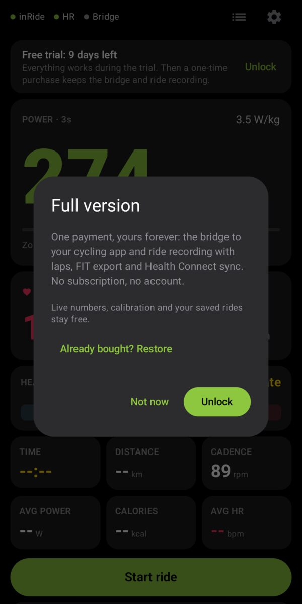

FluidBridge manual
FluidBridge turns your Android phone into a Bluetooth power meter for your Kinetic fluid trainer. It reads the Kinetic inRide sensor, shows your power, speed and cadence, sends them to your cycling app, and records your rides. No account. No cloud. Your data stays on your phone.
Quick start
- Wake the sensor. Spin the rear wheel so the inRide pod wakes up. Close Kinetic Fit and any other app that uses the pod: the inRide talks to one app at a time.
- Open FluidBridge and allow Bluetooth (nearby devices) and notifications.
- Choose your inRide in Settings → inRide sensor. It is marked with a green "inRide" tag. You do this once.
- Pedal. Power, speed and cadence appear right away. Nothing else to start.
- Ride in a cycling app (optional): turn on the Bridge switch, then pair the power meter in your cycling app.
- Record the ride (optional): tap Start ride, and Finish when you are done.
- Better numbers (optional): enter your FTP, weight and heart rate in Settings.
Compatibility
Sensor and trainer
FluidBridge speaks Kinetic's own inRide Bluetooth protocol, with the power formula from Kinetic's open-source decoder. Kinetic has phased the inRide 2 out of its new app and of some third-party training apps; FluidBridge makes it a standard Bluetooth power meter again.
| Sensor or trainer | FluidBridge |
|---|---|
| inRide 2 (black, Bluetooth only), as fitted on the Road Machine Smart and Rock and Roll Smart (first generation) | Works |
| inRide kit added to a classic Road Machine, Rock and Roll or Pro fluid trainer | Works |
| inRide 3 (green), also on the Road Machine Smart 2 and Rock and Roll Smart 2 | Works, tested |
| Standard and Pro flywheel | Works, detected from the calibration |
| Kinetic Smart Control trainers (R1 and others) | Not needed |
| First inRide (2012, "Powered by Wahoo" on the back) | Not tested |
| Other brands | No |
Battery: the pod runs on a coin-cell battery (the round type used on computer motherboards). A weak battery causes dropouts: if the numbers freeze or the pod keeps reconnecting, replace it first.
Phone
- Android 8.0 or newer with Bluetooth LE. Health Connect needs Android 9 or newer.
- The bridge needs a phone that can advertise over Bluetooth LE (peripheral mode). Most phones since 2017 can. If yours cannot, the app says so, and live numbers and ride recording still work.
- Tested on a Samsung Galaxy S20 FE. Some phones struggle to read the sensor and advertise at the same time: Demo mode is the quickest way to check yours.
Cycling apps
Any cycling app that pairs a Bluetooth power meter (Cycling Power) should work, on a computer, tablet, phone or TV. Tested with MyWhoosh on a Mac. The phone appears as a power meter, not as a smart trainer: the cycling app cannot change the resistance (a fluid trainer cannot do that anyway).
The main screen


- Status: inRide, heart rate and Bridge, each with a dot (green = working, orange = waiting, gray = off). Tap them to open Settings. While recording, a ● REC or PAUSED tag. Then Activities (list icon) and Settings (gear).
- Warnings, only when needed: Bluetooth is off, or battery optimization could stop the app with the screen off.
- Power: the average of the last 3 seconds, W/kg with your weight, and your power zone with your FTP. A "coasting" tag shows when you stop pedaling.
- Heart rate and Speed, then the heart rate zone (Z1 to Z5).
- Fields: time, distance, cadence, average power, calories and average heart rate of the ride.
- Lap (while riding): tap the card to start a new lap.
- Start ride, or Pause / Finish while riding.
- Bridge switch.
The bridge
Turn on the Bridge switch and your phone appears as a power meter and a heart rate monitor, named after your phone's Bluetooth name.
- Turn the bridge on with FluidBridge on screen.
- In your cycling app, open its pairing screen and choose your phone as the power source (and as the heart rate source if you use a strap).
- Pair inside the cycling app, not in the computer's Bluetooth settings.
The status next to the switch shows waiting for the cycling app until it connects, then cycling app receiving. The bridge keeps running with the screen off; a notification shows your numbers and a Stop button. If the phone stops the app, the bridge comes back by itself when it restarts.
Heart rate
Choose a chest strap, armband, or a watch or app that broadcasts heart rate over Bluetooth in Settings → Heart rate sensor. Wear it (or start broadcasting) so it shows up. FluidBridge shows it live, records it, puts it in .FIT files and, with the bridge on, passes it to your cycling app in the same connection. Most straps accept one connection only, so letting FluidBridge relay it works better than pairing it twice.
Heart rate zones need your max heart rate. The default Automatic zones also use your resting heart rate (heart rate reserve, the method most sports watches use). You can also choose % of max heart rate or Custom starts for each zone.


Rides
You can record a ride with or without the bridge.
- Start ride begins recording (a live sensor or Demo mode is needed).
- Pause / Resume stops and restarts the clock.
- Auto-pause (on by default): the clock stops when the roller stays below 3 km/h (2 mph) for 5 seconds and restarts as soon as you pedal.
- Lap: tap the lap card. The phone vibrates and a banner shows the lap you just closed.
- Finish asks Finish and save, Discard (asked twice) or Keep going, then opens the summary.
- Every ride is saved as you go: if the phone stops the app, you lose at most a few seconds.
Summary and zones


| Number | Meaning |
|---|---|
| Moving time | Time that counted, pauses excluded |
| Distance, avg speed | Measured on the roller |
| kcal | Estimated energy your body burned (close to the kJ of work: the body is about 24% efficient) |
| avg W | Average power, coasting counted as 0 W |
| NP | Normalized power: closer to how hard the ride felt |
| TSS · IF | Training stress (one hour at FTP = 100) and intensity (NP ÷ FTP) |
| W/kg, Max 5 s, work | Power per kg, best 5-second power, energy at the pedals |
| Power & heart rate | Chart of power (5-second smoothing) and heart rate over the ride |
| Time in zones | Heart rate zones (Z1–Z5) and power zones (Z1 Recovery … Z7 Neuromuscular, from your FTP) |
| Laps | Time, average and max power, cadence and heart rate of each lap |
Don't know your FTP? A common estimate is 95% of your best 20-minute average power.
Why the distance differs from your cycling app: FluidBridge measures the roller; the cycling app computes a virtual speed from your power, weight and the route. Both are right.
Activities and export

Activities shows this week's and this month's totals, then your rides by month. Tap a ride for its summary. In the summary:
- Sync with Health Connect writes the ride to Health Connect (allow it once in Settings).
- ⋮ → Share .FIT sends the file to another app; ⋮ → Save .FIT to phone saves it to a folder.
- ⋮ → Delete always asks for confirmation and cannot be undone. It does not remove the ride from Health Connect.
Strava: save or share the .FIT file, then upload it at strava.com → Upload activity → File. The .FIT file also works with Garmin Connect, TrainingPeaks, Intervals.icu, Golden Cheetah and most platforms.
Calibration (spindown)
Power from a fluid trainer depends on how hard the roller presses on the tire. The inRide measures it with a spindown: you speed up, stop pedaling, and it times how long the wheel takes to slow down. Find it in Settings → inRide sensor, which shows the value stored in your pod:
| Shown | What to do |
|---|---|
| Valid (1.50–2.00 s, or 4.70–6.50 s with a Pro flywheel) | Nothing |
| Not calibrated | The 1.75 s default is used. Calibrate for accurate power. |
| Too fast | Loosen the roller a little and calibrate again |
| Too slow | Tighten the roller a little and calibrate again |
- Ride about 10 minutes first, so the tire is warm, with the roller pressure you ride with.
- Tap Calibrate now.
- Sprint until the screen turns red and says STOP, then stop pedaling completely and let the wheel coast. Do not brake.
- The result shows while the wheel is still slowing down, and is saved in the pod.
It matters: at 30 km/h, a 1.5 s spindown gives about 260 W and a 2.0 s spindown about 193 W.
Settings
| Setting | |
|---|---|
| inRide sensor | Choose or change the sensor; calibration |
| Units | Metric (km, km/h, kg) or Imperial (mi, mph, lb) |
| FTP, weight | Enable zones, IF, TSS and W/kg |
| Heart rate sensor | Optional strap, watch or broadcaster app |
| Max and resting heart rate, zones | Heart rate zones |
| Health Connect | Allow FluidBridge to save rides there |
| Auto-pause | On or off |
| Background use | Lets the bridge run with the screen off. Tap to allow. |
| Full version | Trial days left, unlock, restore |
| Demo mode | Simulated sensor for testing |
| Event log | Technical messages, useful when something does not work |
Free trial and full version


Everything works for 14 days from the first time you open the app; a card at the top shows the days left. After that, live numbers, calibration and your saved rides stay free, and a one-time purchase (US$ 5.99 on Google Play, no subscription) keeps the bridge and ride recording. A ride or bridge already running is never stopped.
Tap Unlock on the card or in Settings → Full version. On a new phone, the purchase comes back by itself; or tap Already bought? Restore.
Troubleshooting
| Problem | Try |
|---|---|
| The sensor is not found | Spin the wheel to wake it. Close Kinetic Fit and other apps that use the pod. Move the phone closer. Check the pod's battery. |
| The cycling app does not list the phone | Turn the bridge on with FluidBridge on screen. Pair inside the cycling app, not in the computer's Bluetooth settings; remove the phone there if you paired it. Try Demo mode. |
| Power seems too high or too low | Calibrate with a warm tire and your usual roller pressure. |
| Cadence jumps a little | Normal: the inRide estimates cadence from the roller. |
| The bridge stops with the screen off | Settings → Background use → allow. On Samsung phones also make sure FluidBridge is not in "Sleeping apps". |
| Numbers show "--" | No sensor chosen, or the sensor is asleep: spin the wheel. |
Still stuck? Write to appssurround@gmail.com with your phone model and a copy of Settings → Event log.
Privacy
FluidBridge has no internet access. No account, no ads, no analytics. Your settings and rides stay on your phone; Android's own backup can keep a copy in your Google account if you turn it on. Read the privacy policy.